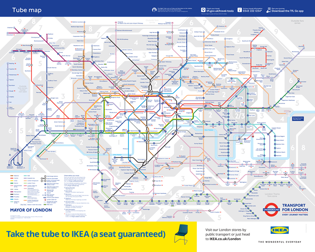

apps.design/accessibility
01
Scroll
Same picture. Two pairs of eyes.
Drag the handle. On the left, a transit map as most people see it. On the right, the same map as someone with deuteranopia sees it. Try to follow each line from end to end.

Nothing about the map changed. Only the eyes did. Map: Transport for London. The right-hand side is a simulation of deuteranopia.
8%
4.1%
300M+
A first look at the data
Each bar is the share of 120 charts, drawn at random from Our World in Data, with at least one pair of colours that loses much of its difference for that type of colour vision. “Nearly identical” means the simulated colours differ by almost nothing (any type). A flag is a warning, not proof that a reader fails. How this was measured
02
03
04
05
Everything looks a little flat…
What the viral clips show
- Someone with red-green colour blindness looks at a colourful scene. It looks muted.
- A friend hands them a pair of tinted glasses.
- They put them on. The reds and greens pull apart, and they react.
- The clip ends there. The two studies below begin there.
An illustration, not a real clip. Glasses like these are tinted filters that raise red-green contrast for some wearers.
90%
55%
64%
2/10
p=0.86
n=10
09
31 / 02 / 2026✕
1,240.00✓
!✓
?✓

06 Chapter 1 · The numbers
Not rare. Not an edge case.
In a classroom of thirty, a bus of fifty or a team of twelve, someone is almost certainly living the day you just lived. Here is how often, and what researchers have measured.
8%of men of European ancestry have red-green colour vision deficiencyBirch 2012, review
4.11%of male Chinese undergraduates, measured in a screening of 17,303 studentsGao 2023
52.3%of affected students knew before their college-entrance medical examGao 2023
How common is it, by group?
Review of many studiesMeasured in one screening
Keep digging
Method and risks
All sources
How common it is, and why
Birch, J. (2012) Gao et al. (2023) · Screening of 17,303 Chinese undergraduates: 4.11% of men, 0.16% of women. Int J Ophthalmol. Colour Blind Awareness · Source of the worldwide estimate of 300 million or more people. Simunovic, M. P. (2010) Cole, B. L. (2004) China, Ministry of Education et al. (2003) · Notice 3 on medical examination for admission to higher education; majors that may refuse colour weakness or blindness. Official page; clause text checked on a government repost.How the charts were measured
Our World in Data · The chart frame (CC BY 4.0) from which 120 charts were drawn at random. Method page and open data · Sampling frame, seed, frozen thresholds, exclusions and the CSV of results. Brettel, Viénot & Mollon (1997) · The dichromacy simulation used by the checker and the on-screen filters. libDaltonLens · Source of the simulation constants.Design guidance and standards
Nuñez, Anderton & Renslow (2018) Harrower & Brewer (2003) W3C WCAG, SC 1.4.1 US Access Board, Revised Section 508 · Incorporates WCAG 2.0 Level A and AA by reference. ETSI EN 301 549 · EU accessibility standard; clause 9.1.4.1 requires the WCAG use-of-colour criterion for web content. WebAIM Million (2026) European Medicines Agency · Good-practice guide on medication errors: colour, shape and marking of tablets.Fixes already in use
Spotify Community thread · The 2017 request and the dot added to the desktop app. Trello support · Colour-blind friendly mode for card labels. Apple Support · Colour filters on iPhone and iPad. Android Accessibility Help · Colour correction. Japan National Police Agency · Count of audible pedestrian signal devices (in Japanese). Hiroshima Prefectural Police · Why the go light is called blue and when lamps changed (in Japanese). Mapping London · The 2013 Colourblind Tube Map app and its patterned lines. TechCrunch (2020) · Critics on the 2020 Workspace icons. Google Workspace Updates (2026) · The May 2026 icon redesign. Datawrapper docs · Automatic colour-blind check in the chart editor. GitHub changelog · Colour-blind themes, public beta in September 2021. The Data School · Adding a colour-blind palette to Tableau.Colour-correcting glasses
Porter, B. (informal survey, 2015) · 42 EnChroma owners among 406 respondents; self-selected and self-reported. Almutairi et al. (2024) · Published version of the Pacific University study: 10 participants, no significant difference from placebo. Gómez-Robledo et al. (2018) · Optics Express: the glasses change colours but do not improve diagnostic test results. Bastien, Mallet & Saint-Amour (2020) · Optometry and Vision Science: 9 colour-blind adults; no clear gain except in the protan subgroup. EnChroma · The company says its glasses are not a cure and do not give everyone the same results.07 Chapter 2 · The charts
The same chart, through four pairs of eyes.
We ran the checker behind our palette tool on real charts from Our World in Data: three studied up close, then a random sample of 120. Scroll, and the eyes change.
Beyond three charts: a random sample of 120
We drew 120 charts at random from Our World in Data’s public chart list. The checker’s thresholds were frozen first; the checker was run once.
Share of charts with a collapsing pair, by chart kind and type of colour vision
- A flag is not proof that a reader fails. The checker has not been validated against people with colour vision deficiency.
- One publisher and one house style: this is not “all charts”. Many of its charts also label lines directly, which can rescue a flagged pair. That is not measured here.
- Maps use sequential colour scales that the checker may over-flag, which is why results are split by kind.
11 Palette studio
Build a palette that survives.
You have seen what other people’s charts look like through their eyes. Now it is your chart, your colours and your reader.
- 1See
- 2Fix
- 3Add a cue
- 4Your turn
Your colours
What each pair of eyes sees
Shown as typical vision. Click a row to see what each type sees in the chart below.
Or check a chart of your own
Pick a chart, a slide or a screenshot. The same checker looks for colour pairs that collapse and shows you where.
The image is read in your browser. Nothing is uploaded or stored.
Seeing as
12 Epilogue
Credits: what is ours, and what is not
Made for this story
- The eight-scene first-person story, its writing and its interactions
- The colour-vision filters and simulations shown on screen
- The scroll-driven chart chapter, the patterned charts and the prevalence chart
- The chart-audit method, code and open data (method, CSV)
- The palette studio and the colour-collision checker
- The page design, animation and all example illustrations
Used, with credit
- Charts: Our World in Data, CC BY 4.0, each linked in the data file
- Prevalence: Birch 2012; Gao 2023; Colour Blind Awareness
- Dichromacy simulation: Brettel, Viénot and Mollon 1997, constants from libDaltonLens
- Transit map in the opening comparison: Transport for London
- Product screenshots on the fixes page: their makers, named on each card
- Interviews: Datawrapper, The Verge, Plural Lab (paraphrased as composites)
- Fonts: Fraunces, Hanken Grotesk, Spline Sans Mono (SIL Open Font License)
- No JavaScript libraries are used